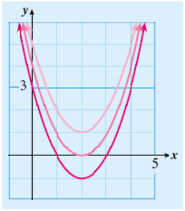

Section 6.5 The Quadratic Formula
The graph of the equation
is shown at right. By reading the graph, we estimate the \(x\)-intercepts at approximately 1.5 and 3.5. To find their exact values, we must solve the equation
But, as you can check, the trinomial \(x^2+2x-5\) cannot be factored.
So far we know two methods for solving quadratic equations: extracting roots and factoring. Neither of these methods applies to every quadratic equation. In this Lesson we consider a technique that works on all quadratic equations.
Subsection Using the Quadratic Formula
The graph of the quadratic equation
depends upon its coefficients, \(a,~b,\) and \(c\text{.}\) In particular, the \(x\)-intercepts of the graph are determined by the values of these coefficients. In fact, there is a formula that uses the coefficients to calculate the solutions of the equation \(ax^2+bx+c=0\text{.}\) It is called the quadratic formula.
The Quadratic Formula.
The solutions of the equation
are given by the formula
Look Closer.
The symbol \(\pm\) is used in this context to combine two similar formulas into one. It means that the quadratic equation has two solutions, namely
Example 6.48.
Use the quadratic formula to solve the equation
We first identify the coefficients \(a,~b,\) and \(c\text{:}\)
We substitute the values of \(a,~b,\) and \(c\) into the quadratic formula, and simplify according to the order of operations. We start with the expression under the radical.
The solutions of the equation are \(\dfrac{-2 + \sqrt{24}}{2}\) and \(\dfrac{-2 - \sqrt{24}}{2}\text{.}\) These are the exact values of the solutions. We can use a calculator to approximate each solution to hundredths.
These values are very close to our estimates from the graph.
Subsubsection Reading Questions
RQ 6.49.
What should you do if a quadratic equation cannot be solved by factoring?
Use the quadratic formula.
Caution 6.50.
Before we use the quadratic formula, we must write the equation in standard form so that we can identify the coefficients \(a,~b,\) and \(c\text{.}\)
Subsubsection Reading Questions
RQ 6.51.
How do we find the values of \(a,~b,\) and \(c\) in the quadratic formula?
They are the coefficients of \(x^2\) and \(x\) and the constant term, respectively.
If some of the coefficients are fractions, it helps to clear the fractions before applying the quadratic formula. The fastest way to clear all the fractions is to multiply each term of the equation by the lowest common denominator, or LCD, of all the fractions involved.
Example 6.52.
- Solve \(~x=\dfrac{2}{3}-\dfrac{x^2}{6}\)
- Find decimal approximations to two decimal places for the solutions.
-
We multiply each term of the equation by the LCD, \(\blert{6}\text{,}\) to get
\begin{align*} \blert{6}(x) \amp =\blert{6}\left(\dfrac{2}{3}-\dfrac{x^2}{6}\right) \amp \amp \blert{\text{Apply the distributive law.}}\\ 6x \amp = 4-x^2 \end{align*}Next, we write the equation in standard form and identify the coefficients.
\begin{gather*} x^2+6x-4=0\\ a=1,~ b=6,~ c=-4 \end{gather*}We substitute the coefficients into the quadratic formula, and simplify.
\begin{align*} x =\dfrac{-b \pm \sqrt{b^2-4ac}}{2a} \amp = \dfrac{-6 \pm \sqrt{6^2-4(1)(-4)}}{2(1)} \amp \amp \blert{\text{Simplify under the radical.}}\\ \amp = \dfrac{-6 \pm \sqrt{52}}{2} \end{align*}The exact values of the solutions are \(x=\dfrac{-6+\sqrt{52}}{2}\) and \(x=\dfrac{-6-\sqrt{52}}{2}\text{.}\)
-
We use a calculator to approximate each solution.
\begin{align*} \dfrac{-6 + \sqrt{52}}{2} \amp \approx \dfrac{-6+7.21}{2} = 0.605\\ \dfrac{-6 - \sqrt{52}}{2} \amp \approx \dfrac{-6-7.21}{2} = -6.605 \end{align*}To two decimal places the solutions are \(0.61\) and \(-6.61\text{.}\)
Subsubsection Reading Questions
RQ 6.53.
If the coefficients in a quadratic equation are fractions, what should you do?
Multiply each term of the equation by their LCD.
Of course, if a quadratic equation can be solved by factoring, then the quadratic formula will give the same solutions. You can use whichever technique seems faster for a particular equation.
Subsection Non-Real Solutions
The graph of
has no \(x\)-intercepts, as you can see in the figure at right. Nonetheless, we can use the quadratic formula to solve the equation
Applying the formula with \(a=1,~b=-4,\) and \(c=5\text{,}\) we find
We cannot continue with the calculation because \(\sqrt{-4}\) is undefined; it is not equal to any real number. This quadratic equation does not have any real-valued solutions, and that is why the graph of \(y=x^2-4x+5\) does not have any \(x\)-intercepts.
The solutions to the equation above are a type of number called complex numbers. If a quadratic equation does not have real-valued solutions, then its graph will not have \(x\)-intercepts.
Every quadratic equation has two solutions. The nature of those solutions determines the nature of the \(x\)-intercepts of the graph.
\(x\)-Intercepts of \(y=ax^2+bx+c\).
The \(x\)-intercepts of the graph of \(y=ax^2+bx+c\) are the solutions of
There are three possibilities.
- If both solutions are real numbers, and unequal, the graph has two \(x\)-intercepts.
- If the solutions are real and equal, the graph has one \(x\)-intercept, which is also its vertex.
- If both solutions are non-real complex numbers, the graph has no \(x\)-intercepts.
Subsubsection Reading Questions
RQ 6.54.
If a quadratic equation has no real solutions, what does that tell you about the graph?
It has no \(x\)-intercepts.
Example 6.55.
How many \(x\)-intercepts does the parabola have?
- \(\displaystyle y=x^2+5\)
- \(\displaystyle y=x^2-6x+9\)
-
To find the \(x\)-intercepts, we solve the equation
\begin{align*} x^2+5 \amp = 0 \amp \amp \blert{\text{Solve by extraction of roots.}}\\ x^2 \amp = -5\\ x \amp = \pm \sqrt{-5} \end{align*}Because the square root of a negative number is undefined, this parabola has no \(x\)-intercepts.
-
We solve the equation
\begin{align*} x^2-6x+9 \amp = 0 \amp \amp \blert{\text{Solve by factoring.}}\\ (x-3)(x-3) \amp = 0\\ x-3=0~~~~x-3 \amp = 0\\ x=3~~~~x \amp = 3 \end{align*}This parabola has one \(x\)-intercept, \((3,0)\text{.}\)
Subsubsection Reading Questions
RQ 6.56.
If the solutions of a quadratic equation are equal, what does that tell you about the graph?
The graph has one \(x\)-intercept, which is also its vertex.
Subsection Skills Warm-Up
Good work!
You've finished the Reading assignment for Section 6.5. Now try the Skills Warm-Up Exercises before the next class meeting.
Exercises Exercises
Solve each equation by the easiest method.
1.
\(x^2=36\)
2.
\(x^2-9x=36\)
3.
\(x^2-9x=0\)
4.
\(9x^2-36=0\)
5.
\(3x^2-24x-36=0\)
6.
\(3x^2=31x-36\)
Solutions Answers to Skills Warm-Up
- \(\displaystyle 6,~-6\)
- \(\displaystyle 12,~-3\)
- \(\displaystyle 0,~9\)
- \(\displaystyle 2,~-2\)
- \(\displaystyle 2,~6\)
- \(\displaystyle \dfrac{4}{3},~9\)
Subsection Lesson
Activity 6.11. Using the Quadratic Formula.
-
Use the quadratic formula to solve \(~~2x^2=7-4x\)
\(\blert{\text{Write the equation in standard form. }}\)
\(\blert{\text{Identify the coefficients.}~~a =\underline{\hspace{2.727272727272727em}},~~b=\underline{\hspace{2.727272727272727em}},~~c=\underline{\hspace{2.727272727272727em}}}\)
\(\blert{\text{Substitute the values of} ~a,~b,~\text{and}~c~\text{into the quadratic formula:}}\)
\begin{equation*} x=\dfrac{-b \pm \sqrt{b^2-4ac}}{2a}=\hphantom{000000000000000000000000000000} \end{equation*}\(\blert{\text{Simplify the expression.}}\)
-
Find decimal approximations to two decimal places for the solutions.
\(\blert{\text{Use a calculator to approximate each solution.}}\)
-
Solve the equation \(~~x^2-\dfrac{x}{3} = \dfrac{4}{3}~~\) by factoring. (Hint: Clear the fractions first!)
- Solve the same equation using the quadratic formula.
Activity 6.12. Application to Graphing.
-
Here are equations for three parabolas. Factor each formula if possible.
- \(\displaystyle y=x^2-4x+3\)
- \(\displaystyle y=x^2-4x+4\)
- \(\displaystyle y=x^2-4x+5\)
Match each equation from part (a) with one of the graphs shown. Explain your reasoning.

-
-
Find the \(x\)-intercepts of each parabola.
- \(\displaystyle y=-x^2+2x-1\)
- \(\displaystyle y=2x^2+4x+3\)
Subsubsection Wrap-Up
Objectives
In this Lesson we practiced the following skills:
- Using the quadratic formula to solve equations
- Solving applied problems using the quadratic formula
- Using the quadratic formula to find the \(x\)-intercepts of a parabola
- Determining how many \(x\)-intercepts the graph has
Questions to answer before the Homework Preview.
Questions
- In Activity 1, can we simplify \(\sqrt{b^2-4ac}\) to \(\sqrt{b^2} - \sqrt{4ac}\text{?}\)
- In Activity 1, Problem 2, why is it helpful to clear fractions from the equation before applying the quadratic formula?
- In Activity 2, Problem 2, how can we find the \(x\)-intercepts if the equation does not factor?
Subsection Homework Preview
Here are exercises to try before the end of the class meeting.
Exercises Exercises
Solve. Give your answers as:
- exact values.
- approximations to three decimal places.
1.
\(x^2+2x-2=0\)
2.
\(2x^2-3x=1\)
3.
\(\dfrac{x^2}{4} - \dfrac{2x}{3} + \dfrac{1}{3} = 0\)
4.
\(3x^2+8x+6=0\)
Solutions Answers to Homework Preview
- \(\displaystyle \dfrac{-2 \pm \sqrt{12}}{2}\)
- \(\displaystyle -2.732,~0.732\)
- \(\displaystyle \dfrac{3 \pm \sqrt{17}}{4}\)
- \(\displaystyle -0.281,~1.781\)
- \(\displaystyle 2, ~\dfrac{2}{3}\)
- \(\displaystyle 2,~0.667\)
- No real solutions
Exercises Homework 6.5
For Problems 1–4,
- Solve by using the quadratic formula.
- Give approximate values for your solutions, rounded to hundredths.
1.
\(x^2-8x+4=0\)
2.
\(3s^2+2s=2\)
3.
\(n^2=n+1\)
4.
\(-4z^2+2z+1-0\)
For Problems 5–7, solve the equation two ways:
- Use the quadratic formula.
- Use either factoring or extracting roots.
5.
\(3t^2-5=0\)
6.
\(z=3z^2\)
7.
\(2w^2+6=7w\)
For Problems 8–11, solve the equation.
8.
\(\dfrac{x^2}{6}+x=\dfrac{2}{3}\)
9.
\(v^2+3v-2=9v^2-12v+5\)
10.
\(m^2-3m=\dfrac{1}{3}(m^2-1)\)
11.
\(-0.2x^2+3.6x-9=0\)
12.
Delbert throws a penny from the top of the Texas Building in Fort Worth. After \(t\) seconds, the height of the penny is given in feet by
- When does the penny pass a window 300 feet above the ground?
- How long does it take the penny to reach the ground?
13.
The volume of a cedar chest is 12,000 cubic inches. The chest is 20 inches high, and its length is 5 inches less than three times its width. Find the dimensions of the chest.
14.
The perimeter of a rectangle is 42 inches and its diagonal is 15 inches. Find the dimensions of the rectangle.
For Problems 15–16, the figure is a right triangle. Find the unknown sides.
15.
16.

For Problems 17–20,
- Find the \(x\)-intercepts of the parabola. (Round your answers to hundredths.)
- Find the vertex of the parabola.
- Sketch the graph.
17.
\(y=x^2-2x-2\)

18.
\(y=-3x^2+2x-1\)

19.
\(y=x^2-4x-1\)
20.
\(y=x^2-0.6x-7.2\)